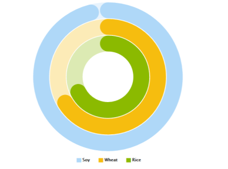

Gauge chart types in Query Viewer control
Gauge is a type of charts which has no X axis and display data in the Y axis as a percentage of a Target Value (which it's the determined by the value of the Target Value property), which is, in general, the maximum value in that axis. Gauge charts provide a great visualization for dashboards.
Note that the percentage value can overcome the Target Value and get out of the control. To avoid this behavior, the Maximum Value of the Gauge chart can be set (the Target Value will always be lower than the Maximum Value), so the Maximum Value will occupy the extreme of the Gauge, and the Target Value will be a middle point.
The Maximum Value it's the determined by the value of the Maximum Value property.
Values
Linear gauge: A Linear gauge chart has the Y axis in a horizontal position.

Circular Gauge: A Circular gauge chart has the Y axis wrapped around the perimeter of a circle.

| Backlinks | |
| Dashboard Gauge Maximum value property | QueryViewer Chart Type property |